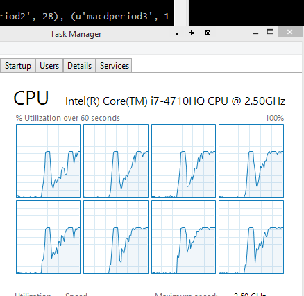

Multicore Optimization¶
Note
The initial multicore support is there and has worked for the well known
set of test cases. Given the behavior exhibited by pickle some other
adjustments are expected to ensure all indicators and functions can be passed
back and forth amongst processes when doing multicore optimization.
Updated on Jul 24, 2015
Some extra corrections for multicore have been pushed as release 1.0.10.88 to have more “unpickable” things made pickable. Indicators tests have shown no problems so far.
Making use of all available cores was something I had in mind for backtrader
but never got done. Support of natural operations, removal of array notation,
inclusion of new indicators and bla, bla, bla.
In reality I am not a great fan of optimization and consequently neither a great fan of utilizing all cores for it. A good idea, imho, is worth a million optimizations.
But someone in the BigMikeTrading forum asked about what this platform had to offer in comparison to others and I mentioned some of the features including that PyAlgoTrade, for example, already had (even multi-machine)
The small but right push needed to get it done was there. From past experience and because the internet if full of references I already knew: multihreading even if the easiest (no matter what GIL lawyers may say) is a no go in Python, regardless of the version. Multithreading is fake in Python in that you have several threads but no parallel execution of code. It may be good to create abstractions and separate code path execution with IO-bound threads but it is really a killer.
Left with only one choice then: the module multiprocessing or a similar
one.
Looking into the bright future I decided to settle for the modern version:
concurrent.futures (what later proved to be a wrong choice) Even if this
meant adding an external dependency for Python 2.6/2.7 support.
The history:
- Some of the dynamic features of Python do not play nice with sending data back and forth amongst processes
- The involved module (
pickle) chokes when pickling (serializing) somethings like classes not defined at module level, lambdas, references to instance methods and dynamic classes without unique names (even if the classes are unique themselves)
And I had those things scattered over the code. I then found dill and the sibling from pathos multiprocess <https://pypi.python.org/pypi/multiprocess>. Apparently they would solve the serialization problems but adding more external dependencies ... no no.
Back to the drawing board to see if the non-pickable items could be made
pickable even if the pickle module produced errors which would have made
some of the old GCC developers very happy.
And it got done ... or no?
Reworked the non pickable items into pickable things
Run a test with Python 2.7.9 and run like a breeze ... smoothly and refreshing using the 8 cores of my machine
Run a test with Python 3.4.3 and the 8 cores went into action but after some optimization, the execution of each subsquent strategy would take longer and longer and longer ... until it was no longer bearable.
Aparently pickling back the result (a complete executed strategy) to the main process was hitting some limit related to memory allocation (and my machine has plenty of free RAM ... more than enough for several hours of parallel optimizations)
Some extra reading took me to consider a simplification of my scenario:
- Using
concurrent.futuresseems like future proof- But the standard
multiprocessingmodule already has whatbacktraderneeds
Smelling of having been using an overkill, some lines were quickly reworked and:
- The test run fine with Python 2.7 (even faster than before)
- The test run equally fast with Python 3.4
Time for a clean-up, running a full battery of tests and executing a push and releasing 1.0.9.88. No new indicators ... just plain old multicore optimization
Having read all that ... it’s time to have a refreshing script about how to control optimization to use multiple cores
- Good news ... NO NEED TO DO ANYTHING ... it’s done without user intervention
When the user wishes to optimize a strategy, the Strategy subclass gets
added to a Cerebro instance as follows:
cerebro.optstrategy(StrategyClass, *args, **kwargs)
As opposed to the regular way of passing a strategy to a Cerebro:
cerebro.addstrategy(StrategyClass, *args, **kwargs)
This was always so and has not changed. The background being:
Cerebroneeds to understand if a strategy is going to be optimized to properly handle arguments to the strategy which may already beiterablesfor a regular strategy
Now ... strategies passed to cerebro with optstrategy get the added
benefit of using all available cores of the machine.
Of course if the end user wishes to have fine grained control of the used
cores ... it’s possible. Standard way of creating a Cerebro:
cerebro = bt.Cerebro() # runonce is True, preload is True and “new” maxcpus is None
maxcpus (a new parameter with this release) is the control key:
- maxcpus = None -> Use all available CPUs
- maxcpus = 1 -> Do not run multicore
- maxcpues = 2 ... -> Use the indicated number of cores
It’s an opt-out strategy, because multicore is already in.
A comparison on a 4 Core (2x threads per core - total of 8 logical processors) machine with 16 GBytes of RAM, running Windows 8.1 and Python 64bit 2.7.9
- Execution with 1 Core: 326 seconds
- Execution with 8 Cores: 127 seconds
Different test runs have shown that the ratio is around 2.75:1 in average.
Unluckily the creation/destruction of processes and the pickling of objects back and forth takes on the potential benefits but the speedup is still significant.
The image shows the 8 cores being used.
The code is below. Just change the maxcpus parameter 1 to limit the test to 1
core.
from __future__ import (absolute_import, division, print_function,
unicode_literals)
import time
from six.moves import xrange
import backtrader as bt
import backtrader.indicators as btind
import backtrader.feeds as btfeeds
class OptimizeStrategy(bt.Strategy):
params = (('smaperiod', 15),
('macdperiod1', 12),
('macdperiod2', 26),
('macdperiod3', 9),
)
def __init__(self):
# Add indicators to add load
btind.SMA(period=self.p.smaperiod)
btind.MACD(period_me1=self.p.macdperiod1,
period_me2=self.p.macdperiod2,
period_signal=self.p.macdperiod3)
if __name__ == '__main__':
# Create a cerebro entity
cerebro = bt.Cerebro(maxcpus=None)
# Add a strategy
cerebro.optstrategy(
OptimizeStrategy,
smaperiod=xrange(5, 40),
macdperiod1=xrange(12, 20),
macdperiod2=xrange(26, 30),
macdperiod3=xrange(9, 15),
)
# Create a Data Feed
datapath = ('../datas/2006-day-001.txt')
data = bt.feeds.BacktraderCSVData(dataname=datapath)
# Add the Data Feed to Cerebro
cerebro.adddata(data)
# clock the start of the process
tstart = time.clock()
# Run over everything
stratruns = cerebro.run()
# clock the end of the process
tend = time.clock()
print('==================================================')
for stratrun in stratruns:
print('**************************************************')
for strat in stratrun:
print('--------------------------------------------------')
print(strat.p._getkwargs())
print('==================================================')
# print out the result
print('Time used:', str(tend - tstart))


{kind=link}